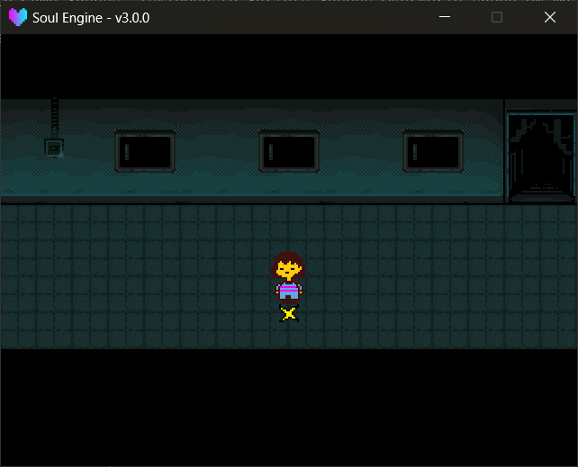

初始化与场景骨架
一个主世界场景非常薄——它只负责三件事：载地图、放音乐、每帧把 Overworld 推一把。
路径： Scripts/Scenes/Overworld/ 。引擎自带 scene_sol.lua 可以直接照抄。
和别的场景一样，Game/Scenes/Overworld/<同名>.lua 会盖掉引擎那份，详见 基础开发 → 场景 。
最小场景¶
local scene = {}
local ow = ImportFile("Overworld")
ow.Init("Maps/main_scene/sol.lua")
ow.SetMusic("Start.ogg")
function scene.update(dt)
ow.Update(dt)
end
function scene.draw()
ow.Draw()
end
function scene.clear()
ow.Clear()
Layers.clear()
end
return scene
scene.clear 里两行都不能少
ow.Clear() 实际做的事： Map.Destroy() 销毁地图的所有碰撞体与贴图 → Camera:unBounds() 解开镜头边界 → 清掉整棵 Scripts.Libraries.Overworld 的模块缓存 → Camera:reset() 。
Layers.clear() 清图层。少写前者会导致第二次进主世界时拿到上一局的残留状态。
Overworld 也是 Game 区可覆盖的那一类
Overworld 属于 Scripts.Libraries.Overworld 这棵模块树，Game/ 区不覆盖它（能覆盖的是 Encounter / Animations / Waves / Souls / Sprites / Fonts 这些）。
想改主世界的行为，走 Game/Hacks/ 里的 hack 脚本，见 基础开发 → Game 区与资源覆盖 。
World.Destroy() 目前没人调
World.Destroy() 是存在的，但全库里没有任何调用点——ow.Clear() 走的是 Map.Destroy() ，物理世界本身会随模块缓存一起被丢掉。
自己写扩展时别误以为它已经被调过。

图层¶
Overworld 在被导入时会自动建立下面这些图层，顺序即遮挡顺序：
| 图层 | 值 | 放什么 |
|---|---|---|
Background |
-100 | 背景 |
Map |
0 | 地图本身（由引擎绘制，不要手动往里塞东西） |
BelowPlayer |
49 | 玩家身后能挡住他的东西（箱子、告示牌） |
Player |
50 | 玩家 |
UponPlayer |
51 | 玩家身前的东西 |
GUI |
80 | 对话框、菜单、存档页 |
TOP |
100 | 全屏黑幕（切换场景淡入淡出） |
DEBUG |
200 | 调试绘制 |
箱子、告示牌这类"有时在前有时在后"的物件，引擎会每帧按玩家位置自动在 BelowPlayer 与 UponPlayer 之间切换，你不用管。
载入地图¶
初始化方法
Overworld.Init(lua_file)载入一张地图。lua_file地图文件相对项目根的路径，例如"Maps/main_scene/sol.lua"。
Overworld.ResolveMapPath(lua_file)返回实际会交给 STI 的路径（Game 区优先）。一般不用手动调。Overworld.AutoCameraBounds()按地图实际覆盖范围重算镜头边界。Init里已经自动调过一次。Overworld.SetMusic(mpath)播放背景音乐，已经在放的同名音乐不会重复播放。
地图的 Game 区覆盖规则： Maps/main_scene/sol.lua 会先找 Game/Maps/main_scene/sol.lua ，有就用它。
覆盖地图要连图块一起带
STI 是按地图文件的相对路径去找图块的（ .lua 里写的是 ../images/... ）。
所以 Game 区那份地图旁边必须也有对应的 ../images/ 目录树，否则图块会整片丢失。
全局变量¶
Overworld 被导入时会挂一批全局变量出来，写场景逻辑时直接用：
| 全局 | 是什么 |
|---|---|
Overworld |
主世界总控表 |
Map |
地图模块（= Overworld.map ） |
World |
物理世界（= Map.world ） |
Char |
玩家（= Map.char ） |
Stat |
菜单 |
Save |
存档页（= Overworld._pages.save ） |
Chest |
箱子页（= Overworld._pages.chest ） |
Step |
遇敌步数计数器 |
DATA |
存档数据（见下） |
FLAG |
= DATA.flags |
CHEST |
= DATA.chests |
ITEMS |
物品数据库 |
另外还有两个全局函数：
全局函数
GetRelativePos(x, y)把"屏幕坐标"换算成"跟着镜头走的世界坐标"。自己做 UI 时必用。SpawnBlock(x, y, width, height, thickness)画一个白边黑底的框，返回带Destroy()的块对象。
DATA：存档数据¶
DATA 就是存档本身。它来自 Game/Logics/init.lua ，如果之前存过档则直接用存档那份。
下面是引擎默认值（ Game/Logics/init.lua 的原始内容）：
logic = {
time = 0, -- 游玩时长（秒）
room_name = "--", -- 存档点显示的地名
room = "Overworld", -- 当前场景名
marker = 2, -- 进入下一张地图时用第几个 mark
position = {0, 0}, -- 存档位置
direction = "down", -- 存档朝向
savedpos = false, -- 是否有"读档位置"待消费
player = {
name = "Chara", lv = 1,
maxhp = 20, hp = 20,
gold = 0, exp = 0,
atk = 0, watk = 0, def = 0, edef = 0,
weapon = "stick", armor = "bandage",
items = { -- 背包（存物品 id 字符串）
"ButterscotchPie",
"PunchCard"
},
getcell = false, -- 是否开放 CELL 菜单
cells = { -- 电话联系人
{id = "Toriel_1", name = "叫妈妈"},
-- ...
}
},
}
玩家落点是怎么定的（三步覆盖）
Map.Init 里对玩家的位置连着写了三次，后面的盖前面的：
- 先放到第一个 mark（
map.objects.marks[1]）； - 再用
Overworld.FindObject("mark", DATA.marker)找id等于DATA.marker的 mark，找到就挪过去——找不到就保持在第一步的位置，不会报错； - 最后如果
DATA.savedpos为true，直接放到DATA.position（读档 / 从战斗回来走的就是这条）。
所以 marker = 2 只在这张地图里真的有个 id = 2 的 mark 时才有意义。
DATA 上的其它字段
flags自定义开关表，通过全局FLAG访问。FLAG["test_killed"] = 1这样用。chests箱子里有什么，通过全局CHEST访问，格式是CHEST["chest"] = {"Spider"}。lv_data等级表，20 级，每级有hp/at/df/totalExp。升级结算与菜单显示都读它。
Game/Logics/ 有专门一页
世界规则（等级曲线怎么定、满级怎么扩、剧情开关、箱子内容）统一写在 游戏逻辑与世界规则 ，本页只讲 DATA 在运行时怎么用。
Game/Logics/init.lua 是硬 require，没有兜底
DATA 的来源写死成 require("Game.Logics") （ Scripts/Libraries/Overworld/init.lua 第 85 行）。
引擎自己没有这份文件，删掉或改名会直接崩。想重置存档就先删存档变量，别删文件。
改了 Logics 没生效？
Game/Logics/init.lua 的最后有一段：如果 Global.GetSaveVariable("Overworld") 存在，就整个把 logic 换成存档那份——你改的默认值会被完全跳过。
调试时把那两行注释掉，或者先删掉存档变量。
ITEMS：物品数据库¶
物品表的查找顺序是 Game.Logics.items → Scripts.Logics.items （ Scripts.Libraries.Overworld/init.lua 里的 owRequireGameFirst ）。
Scripts/Logics/ 这个兜底目录目前并不存在
引擎侧根本没有 Scripts/Logics/items.lua ，所以列表里那一档永远命中不了，物品表事实上只有 Game/Logics/items.lua 一个来源。
两份都找不到时会打印 [Overworld] WARNING: items table not found under Game.Logics or Scripts.Logics. ，随后一用到 ITEMS.FindItemByID 就会因索引 nil 而崩。
local db = {
{id = "MonsterCandy", name = "Monster Candy"},
{id = "Spider", name = "Spider", _color = {0.5, 1, 0}},
-- ...
}
db._actions = {
{
id = "Spider",
use = {"* You ate the Spider...", "* I CAN'T UNDERSTAND."},
info = {"* A spider."},
drop = {"* You dropped the Spider...\n* But nothing happened."}
}
}
ITEMS 方法
ITEMS.FindItemByID(id)按 id 取物品定义，返回含id/name/_color的表。ITEMS.GetActionByID(id, action)取某物品的一段文本。action"use"/"info"/"drop"。
背包里存的只是 id 字符串，显示时再 FindItemByID 查名字和颜色。
Overworld 总控方法速查¶
Overworld 方法
Overworld.Init(lua_file)载入地图。Overworld.Update(dt)每帧推进（菜单 → 地图 → 存档页 → 箱子页 → 遇敌计数）。Overworld.Draw()绘制，目前是空实现，留给你自己画 HUD。Overworld.Clear()全部销毁并清缓存。Overworld.SetMusic(mpath)放音乐。Overworld.CalcNextEXP()返回距离下一级还差多少 EXP。
Overworld 属性
Overworld.map地图模块。Overworld.stat菜单模块。Overworld.debug是否开启调试绘制，默认false。Overworld.follow_player镜头是否自动跟随玩家，默认true。Overworld.ui_prefer对话框默认出现在上还是下，"down"（默认）或"up"。
调试¶
把 Overworld.debug 设为 true ：
- 所有 Tiled 对象的碰撞体会被画出来（按类型分颜色）。
- 按 空格 可以把镜头瞬移到鼠标所指的世界坐标，方便对坐标。
详见 地图与对象层 → 调试 。